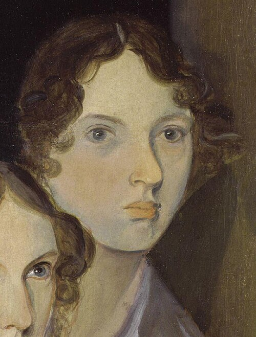

Emily Brontë
Rakkaus ja katkeruus kaikuvat yli sukupolvien.
Brontën ainoassa romaanissa tunne on voima, joka muovaa koteja, maisemaa ja seuraavan sukupolven elämää. Kertojien ristiriitaiset äänet jättävät lukijalle paljon päätettävää.
Etsi teokset kirjastostaElämä ja teokset
Emily Brontë eli suuren osan elämästään Haworthissa Yorkshiressa. Hän kirjoitti runoja ja rakensi sisarustensa kanssa kuvitteellisia maailmoja. Kirjallisuus oli perheen yhteinen harrastus jo kauan ennen julkaisuja.
Hän julkaisi nimellä Ellis Bell. Humiseva harju ilmestyi vuonna 1847 ja jäi hänen ainoaksi romaanikseen. Sen ristiriitaiset henkilöt ja väkivaltaiset suhteet hämmensivät aikalaislukijoita. Brontë kuoli seuraavana vuonna, vain 30-vuotiaana.
Tyyli ja teemat
Kerronta kulkee muistojen ja toisten ihmisten kertomusten kautta. Kukaan ei hallitse koko totuutta. Nummien avaruus ja talojen suljetut huoneet korostavat läheisyyden ja vapauden jännitettä, eikä voimakas tunne merkitse automaattisesti hyvyyttä.
Muisti · Pakkomielle · Sukupolvet
Aloita tästä
Humiseva harju
Catherinen ja Heathcliffin suhde jättää jälkensä kahden perheen elämään. Monikerroksinen romaani rakkaudesta, loukatusta ylpeydestä ja peritystä katkeruudesta.
Kysy jokaisen kertojan kohdalla, mitä hän tietää itse ja mitä hän on kuullut muilta.